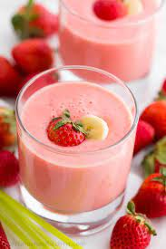

Strawberry Smoothie Recipe

This delicatble smoothie is a great addition to your perfect morning
Follow this very simple recipe to get a kick up from your usual routine
*We are not responsible for any terrible side effects from making this*
What You Need:
- 3 Cups Frozen Strawberries
- 1.5 Cups Milk Any Variety
- 1/3 Cup Strawberry Jam
How to Make:
- Place Frozen Strawberries, Jam, and Milk in Blender
- Place Lid over Top
- Blend and Good to Go!
You Could Always mix it up with adding fresh chunks of Pineapple or Mango!
Home